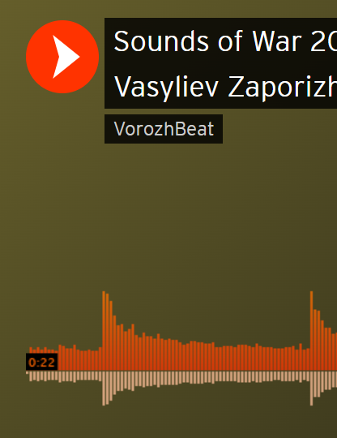
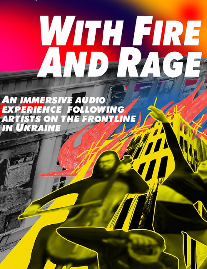
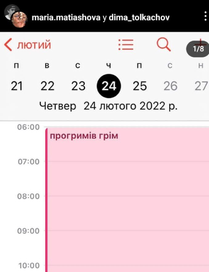
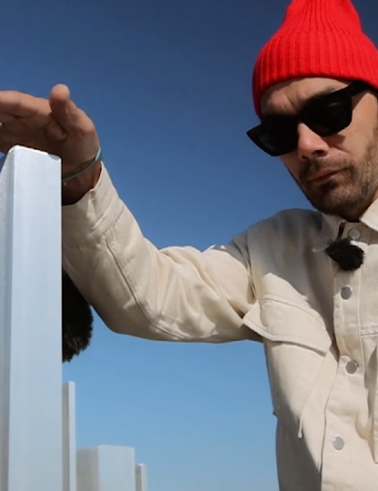
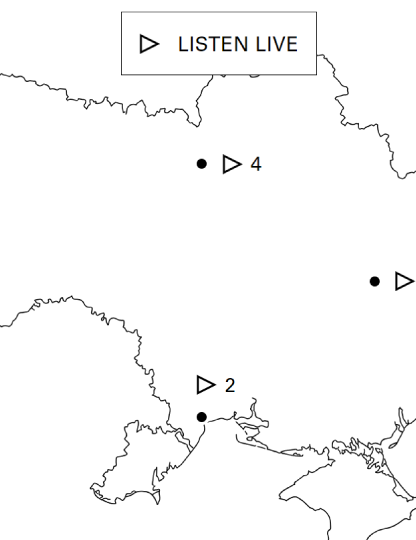
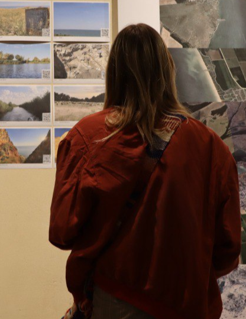

Звуки війни // Sounds of War
https://soundcloud.com/vorozhbeat/sets/sounds-of-war-2022-real-field
Денис Васильєв // by Denys Vasyliev
Як звучить війна, можна почути на записах, зроблених запорізьким музикантом, засновником етно-музичного клубу «БарабанЗА» і Музею музичних інструментів Денисом Васильєвим. Від весни 2022 року він збирає аудіосвідчення війни.
You can hear what war sounds like on the recordings made by Denys Vasyliev, a musician from Zaporizhzhia, founder of the ethno-music club BarabanZA and the Museum of Musical Instruments. Since the spring of 2022, he has collected audio evidence of the war.

Із вогнем та люттю // With Fire and Rage
https://www.withfireandrage.com/
Вероніка Склярова, Зої де Лафферті // by Veronika Skilarova, Zoe Lafferty
Cпеціальний проєкт-аудіотур "Із вогнем та люттю", що діяв у публічних місцях у Ліверпулі. Авторки мистецького аудіо-вистави пропонують по-справжньому почути Україну: зокрема слідкувати за митцями на передовій та почути історії із укриттів.
Discover the stories of artists on the frontline in Ukraine as you walk the streets of Liverpool With Fire and Rage. An immersive audio experience, it combines testimony with photography, visual art, poetry and music.

чуєш, десь рвонуло так, ніби // did you hear? it exploded as if…
https://www.instagram.com/p/CapB7pptkfi/?igshid=Y2IzZGU1MTFhOQ==
Марія Матіасова, Діма Толкачов // by Maria Matiasova, Dima Tolkachov
тепер вибухи – це рутина. то наростаючи, то стихаючи повсякчас, вони адаптують психіку до безперервного відчуття небезпеки. тож ми починаємо звикати до того, що нас лякає. пристосовуючись, ми помічаємо у розривах бомб відгук знайомих нам із мирного життя звучань. деякі з цих банальних шумів нас дратували, деякі – страхали. але під ракетним обстрілом, ми пригадуємо і сумуємо за всіма дружніми грюканнями і бахканнями. як і розуміємо, що відтепер – усі вони нагадуватимуть нам звуки війни.
the bombing has become our daily routine. when we continue hearing sounds of blasts – again and again – our psyche starts adapting to the everlasting danger. we’re getting used to what we’ve been scared of. now explosions resemble familiar sounds of once a peaceful life. some of those banal noises used to annoy us. some – startled us. but we miss the friendly booms and bangs every time we’re under rocket fire. as well as we understand that from now they all will remind us of the sounds of war.
- 
Як звучить Україна // The Sound of Ukraine
https://youtube.com/playlist?list=PLEgDkHjKcR6S6YqZPypVzSnJnP5qyoMyu
Євген Філатов // by Yevhen Filatov
Як звучить Україна — абсолютно новий формат, музична подорож. Музикант і композитор Євген Філатов (The Maneken, Onuka) збирає звуки українських міст і створює з них мелодію.
The Sound of Ukraine is an entirely new format, a musical journey. Musician and composer Yevhen Filatov (The Maneken, Onuka) collects the sounds of Ukrainian cities and creates a melody from them.

Земля повернення, земля турботи // Land to Return, Land to Care
https://acousticommons.net/listen/land-to-return/
Віктор Константінов, Іван Скорина, Ксенія Щербакова, Ксенія Янус та Максим Іванов // by Viktor Konstantinov, Ivan Skoryna, Kseniia Scherbakova, Kseniia Yanus, Maksym Ivanov
Учасники та учасниці мистецького проєкту працювали з основною темою проєкту — зміни у навколишньому середовищі, спричинені повномасштабним вторгненням росії в Україну. Вони зібрали портативні «стрімбокси», які працюють як відкриті мікрофони, транслюючи звуки на онлайн мапу.
Reflecting upon the project’s core theme of changes to the landscape caused by the ongoing Russian invasion of Ukraine, each artist built a portable ‘streambox’ that works as an open microphone, streaming the sounds of their location to an online sound map.

Listening and Hearing // Слухати і чути
https://cutt.ly/pwugDg07
РадіоГараж // RadioGarage
Експозиція «Слухати і чути» показує те, якими бувають звукові ландшафти, як сприймати, а не просто чути звуки, які оточують українців. Виставка складається з мистецьких творів та теоретичної частини.
The exhibition "Listening and Hearing" shows what soundscapes look like, and how to perceive, not just hear, the sounds surrounding Ukrainians. The exhibition consists of artworks and a theoretical part.
